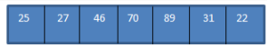
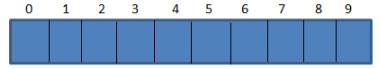
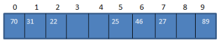
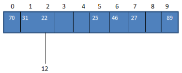
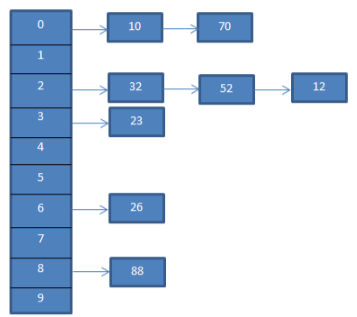
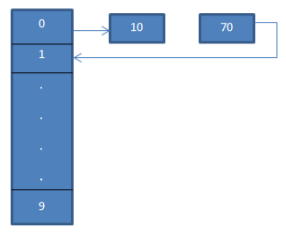
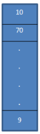

Una tabla hash es una estructura de datos que asocia llaves o claves con valores. La operación principal que soporta de manera eficiente es la búsqueda: permite el acceso a los elementos (teléfono y dirección, por ejemplo) almacenados a partir de una clave generada (usando el nombre o número de cuenta, por ejemplo). Funciona transformando la clave con una función hash en un hash, un número que identifica la posición (casilla o cubeta) donde la tabla hash localiza el valor deseado.
Cada posición de la tabla no almacena un único elemento sino la cabeza de una lista encadenada que a su vez contiene todos aquellos elementos cuya función de hash ha devuelto idéntico resultado. Una posición de la tabla en la que no se haya insertado ningún elemento, contiene un puntero a NULL. La siguiente figura muestra una tabla de tamaño n y los elementos almacenados en las posiciones 0, 1, 2, n-2 y n-1.
En diferentes posiciones de la tabla pueden tener listas de diferente longitud, o incluso vacías. Dada una clave, el proceso de búsqueda consiste en calcular primero su índice mediante la función de hash, y a continuación buscar esa clave en la lista de colisiones.
la ganancia en eficiencia de una tabla hash con respecto a una lista encadenada que contenga todos los elementos se basa en que la longitud de las listas de colisiones es sensiblemente menor que el número total de elementos. Si una tabla tiene todas sus cadenas de colisión de igual longitud, el tiempo de búsqueda se reduce sensiblemente. Sin embargo, en el caso extremo en el que todos los elementos están en una única cadena de colisión, la tabla tiene la misma eficiencia que una lista encadenada.
Consideremos una función hash h(x) que mapea el valor ' x ' a ' x%10 ”En la matriz. Para los datos dados, podemos construir una tabla hash que contenga claves o códigos hash o hash como se muestra en el siguiente diagrama.
podemos ver que las entradas de la matriz se asignan a sus posiciones en la tabla hash mediante una función hash.
Por lo tanto, podemos decir que el hash se implementa mediante dos pasos como se menciona a continuación:
Consideremos una función hash h(x) que mapea el valor ' x ' a ' x%10 ”En la matriz. Para los datos dados, podemos construir una tabla hash que contenga claves o códigos hash o hash como se muestra en el siguiente diagrama.
1. El valor se convierte en una clave entera única o hash mediante una función hash. Se utiliza como índice para almacenar el elemento original, que cae en la tabla hash. En el diagrama anterior, el valor 1 en la tabla hash es la clave única para almacenar el elemento 1 de la matriz de datos dada en el lado izquierdo del diagrama.
2. El elemento de la matriz de datos se almacena en la tabla hash, donde se puede recuperar rápidamente utilizando el clave hash. En el diagrama anterior, vimos que hemos almacenado todos los elementos en la tabla hash después de calcular sus respectivas ubicaciones usando una función hash. Podemos usar las siguientes expresiones para recuperar valores hash e index.
La eficiencia del mapeo depende de la eficiencia de la función hash que usamos.
Una función hash básicamente debe cumplir los siguientes requisitos:
La tabla hash o un mapa hash es una estructura de datos que almacena punteros a los elementos de la matriz de datos original.
En nuestro ejemplo de biblioteca, la tabla hash de la biblioteca contendrá punteros a cada uno de los libros de la biblioteca.
Tener entradas en la tabla hash facilita la búsqueda de un elemento particular en la matriz.
Como ya se vio, la tabla hash usa una función hash para calcular el índice en la matriz de cubos o ranuras con las que se puede encontrar el valor deseado.
Considere otro ejemplo con la siguiente matriz de datos:
Supongamos que tenemos una tabla hash de tamaño 10 como se muestra a continuación:
Ahora usemos la función hash que se proporciona a continuación.
int hash_code = Value % 10;
Usando esto, asignamos los valores clave a las ubicaciones de la tabla hash como se muestra a continuación.
| Valor | Función hash | Código hash |
|---|---|---|
| 22 | 22%10=2 | 2 |
| 25 | 25%10=5 | 5 |
| 27 | 27%10=2 | 7 |
| 46 | 46%10=2 | 6 |
| 70 | 70%10=2 | 0 |
| 89 | 89%10=2 | 9 |
| 31 | 31%10=2 | 1 |
Usando la tabla anterior, podemos representar la tabla hash de la siguiente manera.
Por lo general, calculamos el código hash utilizando la función hash para poder asignar el valor de la clave al código hash en la tabla hash. En el ejemplo anterior de la matriz de datos, insertemos un valor 12. En ese caso, el código hash para el valor clave 12 será 2. (12% 10 = 2).
Pero en la tabla hash, ya tenemos una asignación al valor clave 22 para hash_code 2 como se muestra a continuación:
Como se muestra arriba, tenemos el mismo código hash para dos valores, 12 y 22, es decir, 2. Cuando uno o más valores clave equivalen a la misma ubicación, se produce una colisión. Por lo tanto, la ubicación del código hash ya está ocupada por un valor clave y hay otro valor clave que debe colocarse en la misma ubicación.
En el caso del hash, incluso si tenemos una tabla hash de un tamaño muy grande, es probable que haya una colisión. Esto se debe a que encontramos un valor único pequeño para una clave grande en general, por lo que es completamente posible que uno o más valores tengan el mismo código hash en cualquier momento.
Dado que una colisión es inevitable en el hash, siempre debemos buscar formas de prevenir o resolver la colisión. Existen varias técnicas de resolución de colisiones que podemos emplear para resolver la colisión que ocurre durante el hash.
Las siguientes son las técnicas que podemos emplear para resolver la colisión en la tabla hash.
En la técnica de encadenamiento independiente, cada entrada en la tabla hash es una lista enlazada. Cuando la clave coincide con el código hash, se ingresa en una lista correspondiente a ese código hash en particular. Por lo tanto, cuando dos claves tienen el mismo código hash, ambas entradas se ingresan en la lista vinculada.
Para el ejemplo anterior, el encadenamiento separado se representa a continuación.
El diagrama anterior representa el encadenamiento. Aquí usamos la función mod (%). Vemos que cuando dos valores clave equivalen al mismo código hash, vinculamos estos elementos a ese código hash mediante una lista vinculada.
Si las claves se distribuyen uniformemente en la tabla hash, el costo promedio de buscar la clave en particular depende del número promedio de claves en esa lista vinculada. Por lo tanto, el encadenamiento separado sigue siendo efectivo incluso cuando hay un aumento en el número de entradas que las ranuras.
El peor de los casos para el encadenamiento por separado es cuando todas las claves equivalen al mismo código hash y, por lo tanto, se insertan en una sola lista vinculada. Por lo tanto, necesitamos buscar todas las entradas en la tabla hash y el costo que son proporcionales al número de claves en la tabla.
Si la posición ya está ocupada, utilizando una secuencia de sondeo, el valor clave se inserta en la siguiente posición que está desocupada en la tabla hash.
Para el sondeo lineal, la función hash puede cambiar como se muestra a continuación:
hash = hash% hashTableSize
hash = (hash + 1)% hashTableSize
hash = (hash + 2)% hashTableSize
hash = (hash + 3)% hashTableSize
Vemos que, en caso de sondeo lineal, el intervalo entre ranuras o sondas sucesivas es constante, es decir, 1.
En el diagrama anterior, vemos que en el 0thubicación ingresamos 10 usando la función hash 'hash = hash% hash_tableSize'.
Ahora, el elemento 70 también equivale a la ubicación 0 en la tabla hash. Pero esa ubicación ya está ocupada. Por lo tanto, usando el palpado lineal encontraremos la siguiente ubicación que es 1. Como esta ubicación está desocupada, colocamos la llave 70 en esta ubicación como se muestra con una flecha.
La tabla hash resultante se muestra a continuación.
El sondeo lineal puede sufrir el problema de la “agrupación primaria” en el que existe la posibilidad de que las celdas continuas se ocupen y la probabilidad de insertar un nuevo elemento se reduzca.
Además, si dos elementos obtienen el mismo valor en la primera función hash, ambos elementos seguirán la misma secuencia de sondeo.
En el sondeo cuadrático, el intervalo entre las ranuras se calcula agregando un valor polinomial arbitrario al índice ya hash. Esta técnica reduce la agrupación primaria en un grado significativo, pero no mejora la agrupación secundaria.
Podemos implementar hash mediante el uso de matrices o listas vinculadas para programar las tablas hash. En C ++ también tenemos una función llamada 'mapa hash' que es una estructura similar a una tabla hash, pero cada entrada es un par clave-valor. En C ++ se llama mapa hash o simplemente mapa. El mapa hash en C ++ generalmente no está ordenado.
Hay un encabezado definido en la biblioteca de plantillas estándar (STL) de C ++ que implementa la funcionalidad de los mapas. Nosotros hemos cubierto Mapas STL en detalle en nuestro tutorial sobre STL.
La siguiente implementación es para hash utilizando las listas enlazadas como estructura de datos para la tabla hash. También utilizamos el 'encadenamiento' como técnica de resolución de colisiones en esta implementación.
La salida muestra una tabla hash que se crea de tamaño 7. Usamos encadenamiento para resolver la colisión. Mostramos la tabla hash después de eliminar una de las claves.